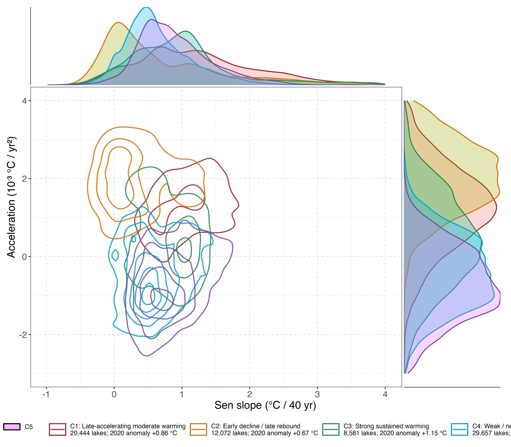

Regional
Temporal response types
We classify lakes by the shape of their 1981–2020 annual STL-trend response. The current canonical classification uses per-lake baseline anomalies relative to 1981–1990, PCA retaining 95% of the trajectory variance, and \(k\)-means clustering. The selected solution has five clusters (\(K = 5\)).
These clusters describe low-frequency lake-surface-temperature response types: lakes with similar STL-trend trajectories are grouped together regardless of continental labels.
NoteFinding 10
Five STL-trend response types are identified. The classes separate weak or plateauing responses from late-accelerating and sustained-warming trajectories; their spatial distributions provide an external check on whether the data-driven classification corresponds to coherent regional climate-response patterns.
| Cluster | Response type | n lakes | 2020 anomaly | Short interpretation |
|---|---|---|---|---|
| C1 | Late-accelerating moderate warming | 20,444 | +0.86 °C | Slow early change followed by stronger post-2000 warming |
| C2 | Early decline / late rebound | 12,072 | +0.67 °C | Flat or slightly negative early trajectory, then late warming rebound |
| C3 | Strong sustained warming | 8,581 | +1.15 °C | Persistent warming throughout the full 40-year record |
| C4 | Weak / near-stable warming | 29,657 | +0.15 °C | Largest low-response class, close to baseline through time |
| C5 | Early warming then plateau | 21,491 | +0.31 °C | Early warming followed by flattening or slight decline |

Cluster descriptions
C1: Late-accelerating moderate warming. This cluster contains 20,444 lakes. The mean STL-trend anomaly rises slowly during the first half of the record and more strongly after 2000, reaching about +0.86 °C in 2020 relative to the 1981–1990 baseline.
C2: Early decline / late rebound. This cluster contains 12,072 lakes. The mean trajectory is flat to slightly negative through the 1990s, then turns upward after the early 2000s and reaches about +0.67 °C by 2020.
C3: Strong sustained warming. This is the smallest but strongest warming cluster, with 8,581 lakes. The mean STL-trend anomaly increases steadily across the full 40-year record and reaches about +1.15 °C in 2020.
C4: Weak / near-stable warming. This is the largest cluster, with 29,657 lakes. The mean response remains close to the baseline throughout the record, with only weak warming and a 2020 anomaly of about +0.15 °C.
C5: Early warming then plateau. This cluster contains 21,491 lakes. The mean trajectory rises through the 1990s and early 2000s, then flattens or slightly declines, ending near +0.31 °C in 2020.
Cluster summary
| Cluster | n | Temp | Warming | Accel | Dominant | Moran’s I |
|---|---|---|---|---|---|---|
| C1 | 8,636 | 1.8 °C | +0.36 | +0.13 | NA 97% | 0.65 |
| C2 | 7,855 | 2.8 °C | +0.35 | -1.33 | NA 96% | 0.70 |
| C3 | 16,401 | 3.1 °C | +0.71 | +1.98 | EU 74% | 0.65 |
| C4 | 9,667 | 3.4 °C | +0.29 | -1.02 | NA 99% | 0.93 |
| C5 | 21,493 | 4.3 °C | +0.84 | +0.37 | EU 68% | 0.61 |
| C6 | 13,768 | 5.0 °C | +0.46 | -1.02 | NA 97% | 0.80 |
| C7 | 8,649 | 5.0 °C | +0.57 | +1.83 | EU 88% | 0.72 |
| C8 | 5,776 | 21.9 °C | +0.57 | +0.69 | SA 30% | 0.67 |
Temp is mean STL trend in °C. Warming is Sen slope of annual STL trend in °C / 40 yr. Accel is Sen slope of first-differenced STL trend in 10-3 °C / yr2. Dominant is the continent with the highest fraction of lakes.
Regime-shift timing by response type
Each cluster has its own characteristic regime-shift timing. If the clustering captures real differences in climate response, lakes within the same cluster should share similar shift-year patterns.
NoteFinding 12
Each cluster shows distinct shift-year peaks. The eight clusters differ not only in spatial pattern but also in physical characteristics. Temperature level, warming rate, acceleration, and regime-shift timing all vary systematically across clusters. STL trend shapes and shift timing are consistent within clusters and distinct between clusters.
Spatial coherence
The eight clusters exhibit different spatial coherence patterns. Some form tight geographic clusters; others form latitudinal bands spanning multiple continents.
NoteFinding 13
Five clusters (C2, C3, C5, C6, C7) form tight geographic clusters, with more than 80% of lakes within ±30° of their centroid. Two clusters (C1, C8) form latitudinal bands spanning the full longitude range at high latitudes. One cluster (C4, tropical) is globally dispersed but concentrated in the subtropical latitude band.